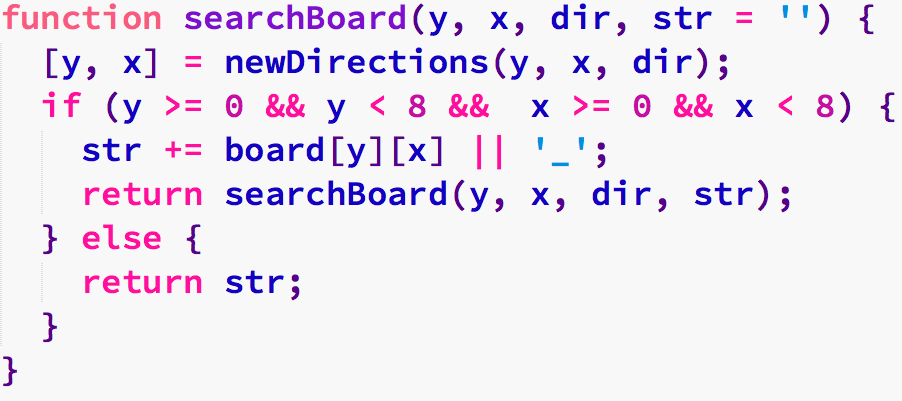
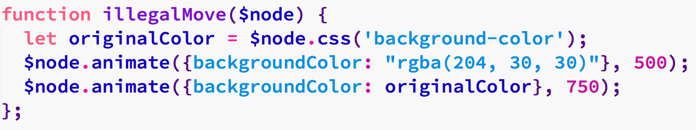

Portfolio
-
Reversi
The difficulty in programming Reversi is the dynamic nature of the game play. A move could take anywhere between one and six opponent pieces in a given move.

Key Function:
searchBoardcompiles the surrounding squares' values in a given direction into a string, making it easy for a regex to find a valid move.Techniques Used:
Recursive Function CallsComplex LogicModel/View SeparationDOM Manipulation with JQueryRegex for Move Validation -
Xanthic && Ochre
Tic Tac Toe was my first programming experience. I wasn't sure if I'd include it in my portfolio, because I've progressed so far beyond this project, but I love the simplicity in the design. There's also a degree of sentimental value in this project, as it's marks the beginning of my programming experience.

Key Function:
illegalMoveuses jQuery-UI animations to alert the user of an illegal move. It's a pretty effect, and transitioning through colors proved to be more of a hassle than I expected.Techniques Used:
jQuery-UI AnimationsMinimal DesignModel/View SeparationDOM Manipulation with jQuery